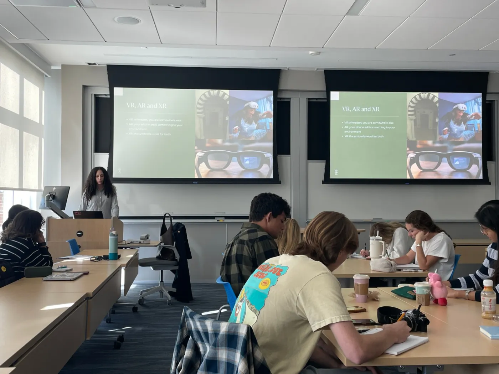
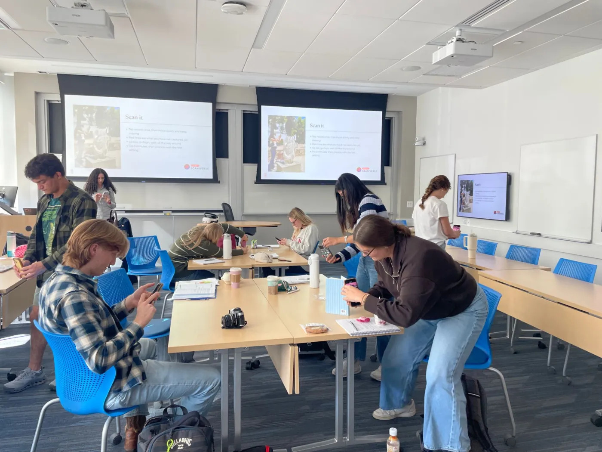
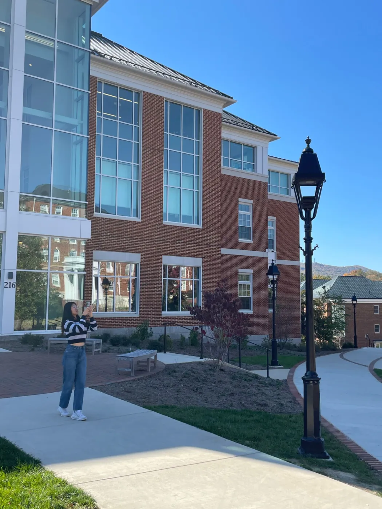
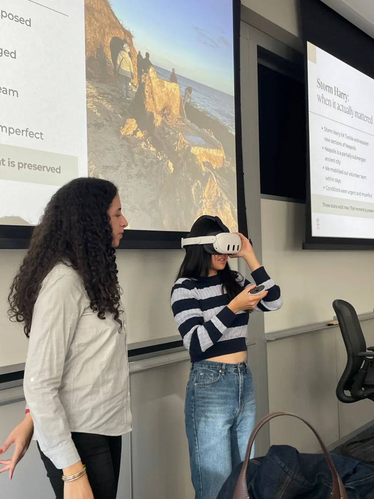
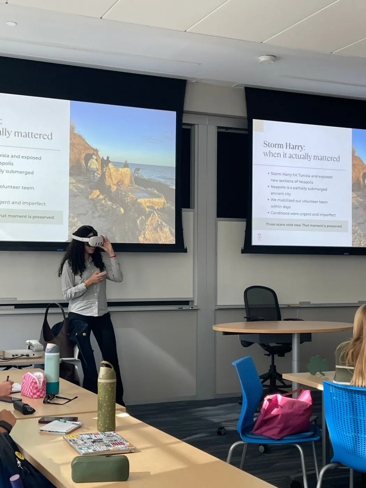

نُشر في 2026-10-27
On Tuesday 27 October 2026, Tanit XR spent a class period at Washington and Lee University in Lexington, Virginia. Ines Said was the guest speaker in BUS 3835, Technology و Transformation of the Arts, at the Williams School, at the invitation of Professor Soo Yon Ryu.

The class started with the basics: what VR, AR و XR are, و how photogrammetry turns a set of phone photos into a 3D object. Then the story of Tanit XR, from scanning قرطاج with a phone to Storm Harry, when the sea exposed new parts of نيابوليس و volunteers went out within days to record them قبل they were lost.

Then it was the students' turn. Everyone opened Scaniverse و scanned something: a tumbler, a water bottle, a sign outside the building. A few took their phones out onto the campus.

They sent their files through tanitxr.org/drop, و a few minutes later each scan was in its own room on استكشاف ثلاثي الأبعاد, next to the objects our volunteers scanned in Tunisia. Then the headset went round the room, so the students could walk around their own scans in VR و visit نيابوليس after the storm.

شكرا لك to Professor Soo Yon Ryu for having us, و to the class for their questions و their scans. The class room is still on the site: tanitxr.org/class. If you teach و would like a session like this, write to info@tanitxr.org.

قرأتموه حتى النهاية
ثلاثة مقالات مقروءة